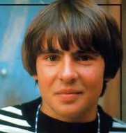
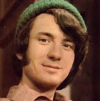
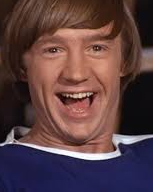

History
Davy Jones
30 December 1945 - 29 February 2012
David Thomas Jones was born at 20 Leamington Street, Openshaw, Manchester, on 30 December 1945. His television acting debut was on the British television soap opera Coronation Street. He portrayed Colin Lomax, Ena Sharples' grandson, for one
episode on 6 March 1961.
He also appeared in the BBC police series Z-Cars. After the death of his mother from emphysema when he was 14 years old, Jones rejected acting in favour of a career as a jockey, apprenticing with Newmarket trainer Basil Foster. He
dropped out of secondary school to begin his career in that field. This career was short-lived, however. Even though Foster believed Jones would be successful as a jockey, he encouraged his young protege to take a role as the Artful Dodger
in a production of Oliver! in London's West End, a move which changed Jones' life forever.
This article uses material from the Wikipedia article "Davy Jones", which is released under the Creative Commons Attribution-Share-Alike License 3.0
Micky Dolenz

Born March 8, 1945
Dolenz was born at the Cedars of Lebanon Hospital (now Cedars-Sinai Medical Center), in Los Angeles, California, the son of actors George Dolenz and Janelle Johnson.
Dolenz began his show-business career in 1956 when he starred in a children's TV show called Circus Boy under the name Mickey Braddock. He played Corky, an orphaned water boy for the elephants in a one-ring circus at the start of
the 20th century. The program ran for two seasons, after which Dolenz made sporadic appearances on network television shows and pursued his education. Dolenz went to Ulysses S. Grant High School in Valley Glen, Los Angeles, California,
and graduated in 1962. In 1964, he was cast as Ed in the episode "Born of Kings and Angels" of the NBC education drama series, Mr. Novak, starring James Franciscus as an idealistic Los Angeles teacher. Dolenz was attending college in Los
Angeles when he was hired for the "drummer" role in NBC's The Monkees.
This article uses material from the Wikipedia article "Micky Dolenz", which is released under the Creative Commons Attribution-Share-Alike License 3.0
Michael Nesmith
Born December 30, 1942
Nesmith was born in Houston, Texas, in 1942. He is an only child.
Nesmith was enrolled in the Dallas public school system in 1949, aged 6 and participated in choral and drama activities during his years at Thomas Jefferson High School. He also began to write verse poetry. When he was 15 he enrolled
in the Dallas Theater Center teen program, where he was featured in several plays.
Nesmith later enrolled in San Antonio community college. While in college, Nesmith began to write more songs and poetry and eventually moved to Hollywood. Nesmith was offered a publishing deal for his songs, and it was while Nesmith
was at this publishing house that Barry Friedman brought the ad for auditions for a new TV series, The Monkees, to Nesmith's attention. In October 1965, Nesmith landed the role as "Mike" in the show, which required real-life musical talent.
This article uses material from the Wikipedia article "Michael Nesmith", which is released under the Creative Commons Attribution-Share-Alike License 3.0
Peter Tork
Born February 13, 1942
Tork was born at the former Doctors Hospital, in Washington, D.C. Although he was born in the District of Columbia in 1942, many news articles incorrectly report him as born in 1944 in New York City, which was the date and place given on early
Monkees press releases. He is the son of Virginia Hope and Halsten John Thorkelson, an economics professor at the University of Connecticut.
He began studying piano at the age of nine, showing an aptitude for music by learning to play several different instruments, including the banjo and both acoustic bass and guitars. Tork attended Windham High School in Willimantic,
Connecticut, and was a member of the first graduating class at E.O. Smith High School in Storrs, Connecticut. He attended Carleton College before he moved to New York City, where he became part of the folk music scene in Greenwich Village
during the first half of the 1960s.
This article uses material from the Wikipedia article "Peter Tork", which is released under the Creative Commons Attribution-Share-Alike License 3.0